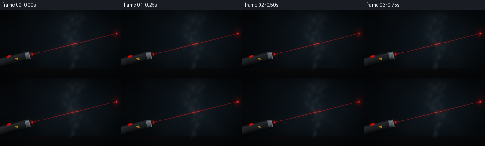
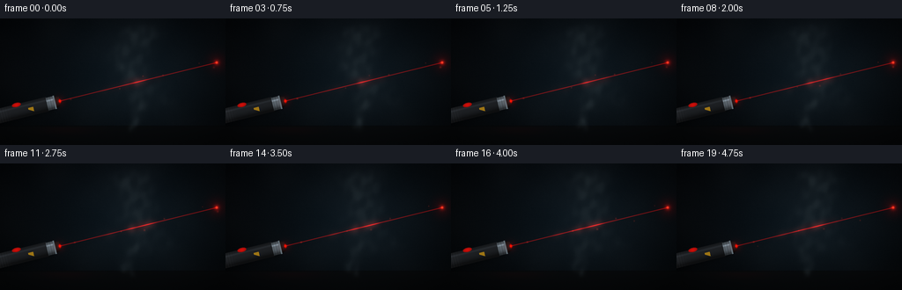

CODING AGENTS AS PIXEL WORLD MODELS
traex/GPT-5.6-Sol · phygen_053
点击播放 · 原生 RGB 像素
逐轮保存的候选
回放视频、检查图与代码变化。
每份候选均可单独播放。实际图片检查记录在下方工具轨迹中。
候选 01播放与检查图
点击播放 · 原生 RGB 像素


展开代码变化
--- 上一保存版本
+++ 本次保存版本
@@ -0,0 +1,292 @@
+from pathlib import Path
+import json
+import numpy as np
+import cv2
+from PIL import Image, ImageDraw, ImageFont
+import artifact_io
+
+CASE_DIR = Path(__file__).resolve().parent
+SPEC = json.loads((CASE_DIR / "task_spec.json").read_text())
+W, H = int(SPEC["width"]), int(SPEC["height"])
+N, FPS = int(SPEC["frames"]), float(SPEC["fps"])
+SS = 3
+w, h = W * SS, H * SS
+
+# Pixel-center coordinates measured in final-frame pixels. Rendering at 3x gives
+# smooth one-pixel optics after reduction.
+yy, xx = np.mgrid[0:h, 0:w].astype(np.float32)
+x = (xx + 0.5) / SS
+y = (yy + 0.5) / SS
+rng = np.random.default_rng(5309)
+
+
+def smoothstep(a, b, z):
+ q = np.clip((z - a) / (b - a), 0.0, 1.0)
+ return q * q * (3.0 - 2.0 * q)
+
+
+def blur(a, sigma_px):
+ return cv2.GaussianBlur(a.astype(np.float32), (0, 0), sigmaX=sigma_px * SS,
+ sigmaY=sigma_px * SS, borderType=cv2.BORDER_REFLECT)
+
+
+def sd_segment(px, py, ax, ay, bx, by):
+ vx, vy = bx - ax, by - ay
+ u = np.clip(((px-ax)*vx + (py-ay)*vy) / (vx*vx + vy*vy), 0.0, 1.0)
+ return np.sqrt((px-(ax+u*vx))**2 + (py-(ay+u*vy))**2), u
+
+
+# Fixed sensor/paint texture: subtle enough not to shimmer frame to frame.
+fine_texture = rng.normal(0, 1, (h, w)).astype(np.float32)
+fine_texture = blur(fine_texture, 0.24)
+coarse_texture = blur(rng.normal(0, 1, (h, w)).astype(np.float32), 13.0)
+coarse_texture /= max(float(coarse_texture.std()), 1e-5)
+
+# Stable dust seeds; their slow trajectories are computed per frame.
+dust_x = rng.uniform(75, 245, 64)
+dust_y = rng.uniform(29, 121, 64)
+dust_r = rng.uniform(0.20, 0.70, 64)
+dust_p = rng.uniform(0, 2*np.pi, 64)
+
+# Laser geometry, shared by the device and ray.
+p0 = np.array([68.0, 94.0], np.float32)
+p1 = np.array([246.0, 50.2], np.float32)
+axis = (p1 - p0) / np.linalg.norm(p1 - p0)
+normal = np.array([-axis[1], axis[0]], np.float32)
+rear = p0 - axis * 86.0
+
+
+def background():
+ """Dark blue-green room, back wall and matte tabletop."""
+ X, Y = x / W, y / H
+ # A diffused pool of room light behind the smoke.
+ glow = np.exp(-(((x-158)/102)**2 + ((y-68)/77)**2))
+ topfall = np.clip(1.08 - 0.70*Y, 0, 1)
+ bg = np.empty((h, w, 3), np.float32)
+ bg[..., 0] = 0.020 + 0.026*glow + 0.008*topfall
+ bg[..., 1] = 0.029 + 0.052*glow + 0.010*topfall
+ bg[..., 2] = 0.037 + 0.067*glow + 0.014*topfall
+ # Plaster-like, low-contrast fixed wall texture.
+ tex = 0.0030*fine_texture + 0.0035*coarse_texture
+ bg += tex[..., None]
+
+ # Table begins near the bottom. A soft seam and a vignetted reflection give depth.
+ table_edge = smoothstep(121.3, 123.0, y)
+ table = np.empty_like(bg)
+ table[..., 0] = 0.018 + 0.014*np.exp(-(y-124)/24)
+ table[..., 1] = 0.024 + 0.017*np.exp(-(y-124)/24)
+ table[..., 2] = 0.029 + 0.019*np.exp(-(y-124)/24)
+ bg = bg*(1-table_edge[..., None]) + table*table_edge[..., None]
+ seam = np.exp(-((y-122.4)/0.55)**2)
+ bg *= (1 - 0.24*seam[..., None])
+
+ # Lens vignette.
+ vign = np.clip(1.0 - 0.46*((X-.5)**2/.34 + (Y-.48)**2/.55), .52, 1.0)
+ bg *= vign[..., None]
+ return np.clip(bg, 0, 1)
+
+
+def smoke_density(t):
+ """A coherent buoyant plume assembled from moving wisps and eddies."""
+ # Broad low-frequency turbulent modulation, advected up and right.
+ n = np.zeros((h, w), np.float32)
+ waves = [
+ (18, 31, .31, 0.8), (31, -23, 1.71, .7), (47, 19, 2.61, .55),
+ (13, -41, .92, .45), (66, 37, 2.02, .38), (25, 14, 4.31, .42),
+ (9, 58, 5.17, .27), (38, -57, 3.52, .26)
+ ]
+ for kx, ky, ph, amp in waves:
+ # Different phase rates avoid rigid translation but remain temporally smooth.
+ n += amp*np.sin(x/kx*2*np.pi + y/ky*2*np.pi + ph + t*(1.2 + .003*ky))
+ n = np.tanh(n * .42)
+ detail = 0.61 + 0.32*n
+
+ rise = 126.0 - y
+ valid = smoothstep(-2, 5, rise) * smoothstep(2, 20, y)
+ # Main winding plume. It widens as it rises and contains translucent gaps.
+ c1 = 149.0 + 0.070*rise + 7.0*np.sin(rise/17.0 - 0.68*t) \
+ + 2.4*np.sin(rise/7.1 + 1.10*t)
+ width1 = 2.8 + .115*np.clip(rise, 0, 105)
+ core1 = np.exp(-0.5*((x-c1)/width1)**2) * valid
+
+ # Fine edge ribbons make the smoke look fibrous rather than like a solid cloud.
+ c2 = c1 - 9.0 - 4.0*np.sin(rise/12.3 + .72*t)
+ c3 = c1 + 11.5 + 3.3*np.sin(rise/10.7 - .51*t)
+ ribbon2 = np.exp(-0.5*((x-c2)/(1.8+.040*np.clip(rise,0,100)))**2)
+ ribbon3 = np.exp(-0.5*((x-c3)/(2.0+.052*np.clip(rise,0,100)))**2)
+ ribbons = (0.26*ribbon2 + 0.22*ribbon3) * valid * smoothstep(19, 105, rise)
+
+ # Slowly rising puffs and curled shoulders around the beam.
+ puffs = np.zeros_like(n)
+ puff_data = [
+ (158 + 4*np.sin(.36*t), 100-1.30*t, 19, 12, .34),
+ (169 + 6*np.sin(.43*t+1), 80-1.05*t, 27, 16, .31),
+ (143 + 7*np.sin(.27*t+2), 60-0.78*t, 25, 18, .27),
+ (187 + 4*np.sin(.39*t+.3), 95-0.93*t, 19, 11, .19),
+ (125 + 4*np.sin(.48*t+2.2), 84-1.10*t, 18, 13, .17),
+ ]
+ for cx, cy, rx, ry, strength in puff_data:
+ e = ((x-cx)/rx)**2 + ((y-cy)/ry)**2
+ # Hollow-ish puffs have soft curled rims.
+ puffs += strength*np.exp(-1.35*e)*(0.72 + .28*np.cos(np.pi*np.sqrt(np.maximum(e, 0))))
+
+ # A narrow feeder from the table visibly establishes the smoke's origin.
+ feeder_x = 150 + 2.2*np.sin((126-y)/6.2 + 1.3*t)
+ feeder = np.exp(-0.5*((x-feeder_x)/2.6)**2) * smoothstep(105, 119, y) * smoothstep(132, 124, y)
+
+ d = (0.48*core1 + ribbons + puffs + 0.42*feeder) * detail
+ # Break up the edges while retaining a transparent central volume.
+ d *= (0.76 + .24*smoothstep(-.55, .65, n + .20*np.sin(y/5.7-x/12+t)))
+ d = blur(np.clip(d, 0, None), 0.68)
+ return np.clip(d, 0, .82)
+
+
+def composite_pointer(im):
+ """Raster-shaded, diagonally aligned black metal laser pointer."""
+ q = (x-rear[0])*axis[0] + (y-rear[1])*axis[1]
+ d = (x-rear[0])*normal[0] + (y-rear[1])*normal[1]
+ absd = np.abs(d)
+ L = float(np.linalg.norm(p0-rear))
+
+ # Soft contact shadow on the tabletop/wall junction.
+ shadow_d, shadow_u = sd_segment(x, y, rear[0]+2, rear[1]+7,
+ p0[0]-4, p0[1]+7)
+ shadow = np.exp(-(shadow_d/5.5)**2) * smoothstep(0, .08, shadow_u) * smoothstep(1, .92, shadow_u)
+ im *= (1 - .25*shadow[..., None])
+
+ body = (q >= 3) & (q <= L-14) & (absd <= 8.4)
+ # Curved cylinder lighting: a cool glint along its upper-facing side.
+ shade = 0.050 + 0.060*np.clip(1-(d/8.4+.28)**2, 0, 1)
+ shade += 0.045*np.exp(-((d+4.5)/1.05)**2)
+ # Subtle machined rings toward the rear.
+ ridges = .018*(0.5 + .5*np.cos(q*2.1))*smoothstep(3, 18, q)*smoothstep(31, 18, q)
+ body_col = np.stack([shade+ridges, shade*1.09+ridges, shade*1.20+ridges], axis=-1)
+ im[body] = body_col[body]
+
+ # Rounded rear cap.
+ rearcap = ((q-3)/3.8)**2 + (d/8.4)**2 <= 1
+ capshade = np.stack([shade*.72, shade*.79, shade*.88], axis=-1)
+ im[rearcap] = capshade[rearcap]
+
+ # Steel focusing collar near the emitter.
+ collar = (q > L-15) & (q <= L-5.2) & (absd < 7.5)
+ cshade = .20 + .23*np.clip(1-(d/7.5+.20)**2, 0, 1) + .22*np.exp(-((d+3.6)/.9)**2)
+ cshade *= (.93 + .07*np.cos((q-(L-15))*2.0))
+ steel = np.stack([cshade*.84, cshade*.93, cshade], axis=-1)
+ im[collar] = steel[collar]
+ ring = (q > L-7.0) & (q <= L-5.2) & (absd < 7.8)
+ im[ring] = np.array([.36, .42, .45], np.float32)
+
+ # Tapered black nose and recessed aperture.
+ nose_w = np.maximum(2.7, 7.0 - .38*(q-(L-5.2)))
+ nose = (q > L-5.2) & (q <= L) & (absd < nose_w)
+ nshade = .028 + .070*np.clip(1-(d/7+.2)**2, 0, 1)
+ ncol = np.stack([nshade*1.05, nshade*.97, nshade*.96], axis=-1)
+ im[nose] = ncol[nose]
+ aperture = ((q-L)/1.2)**2 + (d/2.65)**2 < 1
+ im[aperture] = np.array([.36, .014, .010], np.float32)
+
+ # Red push button, viewed obliquely on the upper rim of the cylinder.
+ bq, bd = L-49.0, -7.5
+ button = ((q-bq)/5.3)**2 + ((d-bd)/2.5)**2 < 1
+ btn_hi = .55 + .27*np.clip(1-((q-bq)/5.3)**2-((d-bd)/2.5)**2, 0, 1)
+ bcol = np.stack([btn_hi, .020+btn_hi*.045, .018+btn_hi*.025], axis=-1)
+ im[button] = bcol[button]
+
+ # Tiny safety marking: warm yellow triangular fleck on the device flank.
+ mark = (q > L-37) & (q < L-31) & (d > -1.0) & (d < 1.0 + .55*(q-(L-37)))
+ im[mark] = np.array([.62, .46, .08], np.float32)
+ return im
+
+
+def add_dust(im, t, density):
+ # Dust grains are mostly visible only where the beam catches them.
+ for i in range(len(dust_x)):
+ px = dust_x[i] + 1.1*t + 1.8*np.sin(.32*t+dust_p[i])
+ py = dust_y[i] - .65*t + 1.2*np.sin(.41*t+dust_p[i]*1.7)
+ dist, u = sd_segment(np.array(px), np.array(py), *p0, *p1)
+ if float(dist) > 6.0 or not (0 < float(u) < 1):
+ continue
+ rr = dust_r[i]
+ spot = np.exp(-((x-px)**2+(y-py)**2)/(2*(rr+.14)**2))
+ flicker = .55 + .35*np.sin(t*2.2+dust_p[i])**2
+ im[..., 0] += spot*.30*flicker
+ im[..., 1] += spot*.050*flicker
+ im[..., 2] += spot*.025*flicker
+ return im
+
+
+def render_frame(index):
+ t = index / FPS
+ im = background()
+
+ # A very restrained red reflection beneath the emitter on the dark tabletop.
+ reflection = np.exp(-((x-75)/31)**2 - ((y-125)/6.5)**2) * smoothstep(121, 126, y)
+ im[..., 0] += .020*reflection
+
+ im = composite_pointer(im)
+ d = smoke_density(t)
+
+ # Cool-grey translucent smoke. Gradient lighting reveals folds without outlines.
+ soft = blur(d, 2.1)
+ dx = cv2.Sobel(soft, cv2.CV_32F, 1, 0, ksize=3) / (8*SS)
+ dy = cv2.Sobel(soft, cv2.CV_32F, 0, 1, ksize=3) / (8*SS)
+ fold_light = np.clip(.58 - 2.3*dx - 1.3*dy, .26, .88)
+ smoke_alpha = np.clip(d*.63, 0, .57)
+ smoke_col = np.empty_like(im)
+ smoke_col[..., 0] = .34*fold_light
+ smoke_col[..., 1] = .41*fold_light
+ smoke_col[..., 2] = .44*fold_light
+ im = im*(1-smoke_alpha[..., None]) + smoke_col*smoke_alpha[..., None]
+
+ # The ray is physically strongest where particles scatter it toward the viewer.
+ line_dist, line_u = sd_segment(x, y, *p0, *p1)
+ seg = smoothstep(-.005, .012, line_u) * smoothstep(1.01, .985, line_u)
+ local_smoke = np.clip(blur(d, 1.25), 0, 1)
+ core = np.exp(-(line_dist/.47)**2) * seg
+ inner = np.exp(-(line_dist/1.30)**2) * seg
+ halo = np.exp(-(line_dist/4.8)**2) * seg
+ # A dim optical core remains; smoke causes vivid, spatially varying red bloom.
+ strength = .18 + 1.13*local_smoke
+ im[..., 0] += core*(.49 + .77*local_smoke) + inner*.24*local_smoke + halo*.31*local_smoke
+ im[..., 1] += core*(.010 + .050*local_smoke) + halo*.026*local_smoke
+ im[..., 2] += core*(.006 + .025*local_smoke) + halo*.013*local_smoke
+
+ # Soft emission washes nearby smoke red, not just the mathematical line.
+ scatter = blur(local_smoke*inner, 3.0)
+ im[..., 0] += .25*scatter
+ im[..., 1] += .018*scatter
+
+ im = add_dust(im, t, d)
+
+ # Stable laser spot on the far wall with subtle coherent power variation.
+ pulse = .97 + .03*np.sin(t*3.1)
+ r2 = (x-p1[0])**2 + (y-p1[1])**2
+ spot_core = np.exp(-r2/(2*.78**2))
+ spot_mid = np.exp(-r2/(2*2.15**2))
+ spot_halo = np.exp(-r2/(2*7.0**2))
+ im[..., 0] += pulse*(1.05*spot_core + .47*spot_mid + .11*spot_halo)
+ im[..., 1] += pulse*(.26*spot_core + .025*spot_mid)
+ im[..., 2] += pulse*(.11*spot_core + .010*spot_mid)
+
+ # Hot red source in the pointer's aperture and short near-field bloom.
+ src_r2 = (x-p0[0])**2 + (y-p0[1])**2
+ im[..., 0] += .76*np.exp(-src_r2/(2*1.08**2)) + .12*np.exp(-src_r2/(2*4.0**2))
+ im[..., 1] += .12*np.exp(-src_r2/(2*.75**2))
+
+ # Fine, fixed grain prevents perfectly synthetic flat regions.
+ im += fine_texture[..., None]*.0020
+ im = np.clip(im, 0, 1)
+ hi = Image.fromarray(np.uint8(np.round(im*255)), "RGB")
+ lo = hi.resize((W, H), Image.Resampling.LANCZOS)
+ return np.asarray(lo, dtype=np.uint8)
+
+
+def main():
+ frames = np.stack([render_frame(i) for i in range(N)], axis=0)
+ artifact_io.save(frames, CASE_DIR)
+ print(f"saved {frames.shape} {frames.dtype}; range={frames.min()}..{frames.max()}")
+
+
+if __name__ == "__main__":
+ main()
候选 02播放与检查图
点击播放 · 原生 RGB 像素

展开代码变化
--- 上一保存版本
+++ 本次保存版本
@@ -2,7 +2,7 @@
import json
import numpy as np
import cv2
-from PIL import Image, ImageDraw, ImageFont
+from PIL import Image
import artifact_io
CASE_DIR = Path(__file__).resolve().parent
@@ -277,7 +277,7 @@
# Fine, fixed grain prevents perfectly synthetic flat regions.
im += fine_texture[..., None]*.0020
im = np.clip(im, 0, 1)
- hi = Image.fromarray(np.uint8(np.round(im*255)), "RGB")
+ hi = Image.fromarray(np.uint8(np.round(im*255)))
lo = hi.resize((W, H), Image.Resampling.LANCZOS)
return np.asarray(lo, dtype=np.uint8)
可观测工具轨迹
实际执行的命令与返回图片。
命令 1exit 0
/bin/bash -lc "cat prompt.txt && printf '\\n--- GENERATION_RULES ---\\n' && cat GENERATION_RULES.md"
命令 2exit 0
/bin/bash -lc "cat task_spec.json && printf '\\n--- FILES ---\\n' && find . -maxdepth 2 -type f -printf '%p\\n' | sort"
命令 3exit 0
/bin/bash -lc "command -v ffmpeg; command -v blender; command -v python3; python3 - <<'PY' mods=['numpy','PIL','cv2','imageio','matplotlib','moderngl','skimage'] for m in mods: try: x=__import__(m); print(m, getattr(x,'__version__','ok')) except Exception as e: print(m, 'MISSING', type(e).__name__) PY"
命令 4exit 0
/bin/bash -lc "sed -n '1,260p' artifact_io.py"
命令 5exit 0
/bin/bash -lc "sed -n '1,220p' player_template.html"
命令 6exit 0
/bin/bash -lc "cat > generate.py <<'PY'
from pathlib import Path
import json
import numpy as np
import cv2
from PIL import Image, ImageDraw, ImageFont
import artifact_io
CASE_DIR = Path(__file__).resolve().parent
SPEC = json.loads((CASE_DIR / \"task_spec.json\").read_text())
W, H = int(SPEC[\"width\"]), int(SPEC[\"height\"])
N, FPS = int(SPEC[\"frames\"]), float(SPEC[\"fps\"])
SS = 3
w, h = W * SS, H * SS
# Pixel-center coordinates measured in final-frame pixels. Rendering at 3x gives
# smooth one-pixel optics after reduction.
yy, xx = np.mgrid[0:h, 0:w].astype(np.float32)
x = (xx + 0.5) / SS
y = (yy + 0.5) / SS
rng = np.random.default_rng(5309)
def smoothstep(a, b, z):
q = np.clip((z - a) / (b - a), 0.0, 1.0)
return q * q * (3.0 - 2.0 * q)
def blur(a, sigma_px):
return cv2.GaussianBlur(a.astype(np.float32), (0, 0), sigmaX=sigma_px * SS,
sigmaY=sigma_px * SS, borderType=cv2.BORDER_REFLECT)
def sd_segment(px, py, ax, ay, bx, by):
vx, vy = bx - ax, by - ay
u = np.clip(((px-ax)*vx + (py-ay)*vy) / (vx*vx + vy*vy), 0.0, 1.0)
return np.sqrt((px-(ax+u*vx))**2 + (py-(ay+u*vy))**2), u
# Fixed sensor/paint texture: subtle enough not to shimmer frame to frame.
fine_texture = rng.normal(0, 1, (h, w)).astype(np.float32)
fine_texture = blur(fine_texture, 0.24)
coarse_texture = blur(rng.normal(0, 1, (h, w)).astype(np.float32), 13.0)
coarse_texture /= max(float(coarse_texture.std()), 1e-5)
# Stable dust seeds; their slow trajectories are computed per frame.
dust_x = rng.uniform(75, 245, 64)
dust_y = rng.uniform(29, 121, 64)
dust_r = rng.uniform(0.20, 0.70, 64)
dust_p = rng.uniform(0, 2*np.pi, 64)
# Laser geometry, shared by the device and ray.
p0 = np.array([68.0, 94.0], np.float32)
p1 = np.array([246.0, 50.2], np.float32)
axis = (p1 - p0) / np.linalg.norm(p1 - p0)
normal = np.array([-axis[1], axis[0]], np.float32)
rear = p0 - axis * 86.0
def background():
\"\"\"Dark blue-green room, back wall and matte tabletop.\"\"\"
X, Y = x / W, y / H
# A diffused pool of room light behind the smoke.
glow = np.exp(-(((x-158)/102)**2 + ((y-68)/77)**2))
topfall = np.clip(1.08 - 0.70*Y, 0, 1)
bg = np.empty((h, w, 3), np.float32)
bg[..., 0] = 0.020 + 0.026*glow + 0.008*topfall
bg[..., 1] = 0.029 + 0.052*glow + 0.010*topfall
bg[..., 2] = 0.037 + 0.067*glow + 0.014*topfall
# Plaster-like, low-contrast fixed wall texture.
tex = 0.0030*fine_texture + 0.0035*coarse_texture
bg += tex[..., None]
# Table begins near the bottom. A soft seam and a vignetted reflection give depth.
table_edge = smoothstep(121.3, 123.0, y)
table = np.empty_like(bg)
table[..., 0] = 0.018 + 0.014*np.exp(-(y-124)/24)
table[..., 1] = 0.024 + 0.017*np.exp(-(y-124)/24)
table[..., 2] = 0.029 + 0.019*np.exp(-(y-124)/24)
bg = bg*(1-table_edge[..., None]) + table*table_edge[..., None]
seam = np.exp(-((y-122.4)/0.55)**2)
bg *= (1 - 0.24*seam[..., None])
# Lens vignette.
vign = np.clip(1.0 - 0.46*((X-.5)**2/.34 + (Y-.48)**2/.55), .52, 1.0)
bg *= vign[..., None]
return np.clip(bg, 0, 1)
def smoke_density(t):
\"\"\"A coherent buoyant plume assembled from moving wisps and eddies.\"\"\"
# Broad low-frequency turbulent modulation, advected up and right.
n = np.zeros((h, w), np.float32)
waves = [
(18, 31, .31, 0.8), (31, -23, 1.71, .7), (47, 19, 2.61, .55),
(13, -41, .92, .45), (66, 37, 2.02, .38), (25, 14, 4.31, .42),
(9, 58, 5.17, .27), (38, -57, 3.52, .26)
]
for kx, ky, ph, amp in waves:
# Different phase rates avoid rigid translation but remain temporally smooth.
n += amp*np.sin(x/kx*2*np.pi + y/ky*2*np.pi + ph + t*(1.2 + .003*ky))
n = np.tanh(n * .42)
detail = 0.61 + 0.32*n
rise = 126.0 - y
valid = smoothstep(-2, 5, rise) * smoothstep(2, 20, y)
# Main winding plume. It widens as it rises and contains translucent gaps.
c1 = 149.0 + 0.070*rise + 7.0*np.sin(rise/17.0 - 0.68*t) \\
+ 2.4*np.sin(rise/7.1 + 1.10*t)
width1 = 2.8 + .115*np.clip(rise, 0, 105)
core1 = np.exp(-0.5*((x-c1)/width1)**2) * valid
# Fine edge ribbons make the smoke look fibrous rather than like a solid cloud.
c2 = c1 - 9.0 - 4.0*np.sin(rise/12.3 + .72*t)
c3 = c1 + 11.5 + 3.3*np.sin(rise/10.7 - .51*t)
ribbon2 = np.exp(-0.5*((x-c2)/(1.8+.040*np.clip(rise,0,100)))**2)
ribbon3 = np.exp(-0.5*((x-c3)/(2.0+.052*np.clip(rise,0,100)))**2)
ribbons = (0.26*ribbon2 + 0.22*ribbon3) * valid * smoothstep(19, 105, rise)
# Slowly rising puffs and curled shoulders around the beam.
puffs = np.zeros_like(n)
puff_data = [
(158 + 4*np.sin(.36*t), 100-1.30*t, 19, 12, .34),
(169 + 6*np.sin(.43*t+1), 80-1.05*t, 27, 16, .31),
(143 + 7*np.sin(.27*t+2), 60-0.78*t, 25, 18, .27),
(187 + 4*np.sin(.39*t+.3), 95-0.93*t, 19, 11, .19),
(125 + 4*np.sin(.48*t+2.2), 84-1.10*t, 18, 13, .17),
]
for cx, cy, rx, ry, strength in puff_data:
e = ((x-cx)/rx)**2 + ((y-cy)/ry)**2
# Hollow-ish puffs have soft curled rims.
puffs += strength*np.exp(-1.35*e)*(0.72 + .28*np.cos(np.pi*np.sqrt(np.maximum(e, 0))))
# A narrow feeder from the table visibly establishes the smoke's origin.
feeder_x = 150 + 2.2*np.sin((126-y)/6.2 + 1.3*t)
feeder = np.exp(-0.5*((x-feeder_x)/2.6)**2) * smoothstep(105, 119, y) * smoothstep(132, 124, y)
d = (0.48*core1 + ribbons + puffs + 0.42*feeder) * detail
# Break up the edges while retaining a transparent central volume.
d *= (0.76 + .24*smoothstep(-.55, .65, n + .20*np.sin(y/5.7-x/12+t)))
d = blur(np.clip(d, 0, None), 0.68)
return np.clip(d, 0, .82)
def composite_pointer(im):
\"\"\"Raster-shaded, diagonally aligned black metal laser pointer.\"\"\"
q = (x-rear[0])*axis[0] + (y-rear[1])*axis[1]
d = (x-rear[0])*normal[0] + (y-rear[1])*normal[1]
absd = np.abs(d)
L = float(np.linalg.norm(p0-rear))
# Soft contact shadow on the tabletop/wall junction.
shadow_d, shadow_u = sd_segment(x, y, rear[0]+2, rear[1]+7,
p0[0]-4, p0[1]+7)
shadow = np.exp(-(shadow_d/5.5)**2) * smoothstep(0, .08, shadow_u) * smoothstep(1, .92, shadow_u)
im *= (1 - .25*shadow[..., None])
body = (q >= 3) & (q <= L-14) & (absd <= 8.4)
# Curved cylinder lighting: a cool glint along its upper-facing side.
shade = 0.050 + 0.060*np.clip(1-(d/8.4+.28)**2, 0, 1)
shade += 0.045*np.exp(-((d+4.5)/1.05)**2)
# Subtle machined rings toward the rear.
ridges = .018*(0.5 + .5*np.cos(q*2.1))*smoothstep(3, 18, q)*smoothstep(31, 18, q)
body_col = np.stack([shade+ridges, shade*1.09+ridges, shade*1.20+ridges], axis=-1)
im[body] = body_col[body]
# Rounded rear cap.
rearcap = ((q-3)/3.8)**2 + (d/8.4)**2 <= 1
capshade = np.stack([shade*.72, shade*.79, shade*.88], axis=-1)
im[rearcap] = capshade[rearcap]
# Steel focusing collar near the emitter.
collar = (q > L-15) & (q <= L-5.2) & (absd < 7.5)
cshade = .20 + .23*np.clip(1-(d/7.5+.20)**2, 0, 1) + .22*np.exp(-((d+3.6)/.9)**2)
cshade *= (.93 + .07*np.cos((q-(L-15))*2.0))
steel = np.stack([cshade*.84, cshade*.93, cshade], axis=-1)
im[collar] = steel[collar]
ring = (q > L-7.0) & (q <= L-5.2) & (absd < 7.8)
im[ring] = np.array([.36, .42, .45], np.float32)
# Tapered black nose and recessed aperture.
nose_w = np.maximum(2.7, 7.0 - .38*(q-(L-5.2)))
nose = (q > L-5.2) & (q <= L) & (absd < nose_w)
nshade = .028 + .070*np.clip(1-(d/7+.2)**2, 0, 1)
ncol = np.stack([nshade*1.05, nshade*.97, nshade*.96], axis=-1)
im[nose] = ncol[nose]
aperture = ((q-L)/1.2)**2 + (d/2.65)**2 < 1
im[aperture] = np.array([.36, .014, .010], np.float32)
# Red push button, viewed obliquely on the upper rim of the cylinder.
bq, bd = L-49.0, -7.5
button = ((q-bq)/5.3)**2 + ((d-bd)/2.5)**2 < 1
btn_hi = .55 + .27*np.clip(1-((q-bq)/5.3)**2-((d-bd)/2.5)**2, 0, 1)
bcol = np.stack([btn_hi, .020+btn_hi*.045, .018+btn_hi*.025], axis=-1)
im[button] = bcol[button]
# Tiny safety marking: warm yellow triangular fleck on the device flank.
mark = (q > L-37) & (q < L-31) & (d > -1.0) & (d < 1.0 + .55*(q-(L-37)))
im[mark] = np.array([.62, .46, .08], np.float32)
return im
def add_dust(im, t, density):
# Dust grains are mostly visible only where the beam catches them.
for i in range(len(dust_x)):
px = dust_x[i] + 1.1*t + 1.8*np.sin(.32*t+dust_p[i])
py = dust_y[i] - .65*t + 1.2*np.sin(.41*t+dust_p[i]*1.7)
dist, u = sd_segment(np.array(px), np.array(py), *p0, *p1)
if float(dist) > 6.0 or not (0 < float(u) < 1):
continue
rr = dust_r[i]
spot = np.exp(-((x-px)**2+(y-py)**2)/(2*(rr+.14)**2))
flicker = .55 + .35*np.sin(t*2.2+dust_p[i])**2
im[..., 0] += spot*.30*flicker
im[..., 1] += spot*.050*flicker
im[..., 2] += spot*.025*flicker
return im
def render_frame(index):
t = index / FPS
im = background()
# A very restrained red reflection beneath the emitter on the dark tabletop.
reflection = np.exp(-((x-75)/31)**2 - ((y-125)/6.5)**2) * smoothstep(121, 126, y)
im[..., 0] += .020*reflection
im = composite_pointer(im)
d = smoke_density(t)
# Cool-grey translucent smoke. Gradient lighting reveals folds without outlines.
soft = blur(d, 2.1)
dx = cv2.Sobel(soft, cv2.CV_32F, 1, 0, ksize=3) / (8*SS)
dy = cv2.Sobel(soft, cv2.CV_32F, 0, 1, ksize=3) / (8*SS)
fold_light = np.clip(.58 - 2.3*dx - 1.3*dy, .26, .88)
smoke_alpha = np.clip(d*.63, 0, .57)
smoke_col = np.empty_like(im)
smoke_col[..., 0] = .34*fold_light
smoke_col[..., 1] = .41*fold_light
smoke_col[..., 2] = .44*fold_light
im = im*(1-smoke_alpha[..., None]) + smoke_col*smoke_alpha[..., None]
# The ray is physically strongest where particles scatter it toward the viewer.
line_dist, line_u = sd_segment(x, y, *p0, *p1)
seg = smoothstep(-.005, .012, line_u) * smoothstep(1.01, .985, line_u)
local_smoke = np.clip(blur(d, 1.25), 0, 1)
core = np.exp(-(line_dist/.47)**2) * seg
inner = np.exp(-(line_dist/1.30)**2) * seg
halo = np.exp(-(line_dist/4.8)**2) * seg
# A dim optical core remains; smoke causes vivid, spatially varying red bloom.
strength = .18 + 1.13*local_smoke
im[..., 0] += core*(.49 + .77*local_smoke) + inner*.24*local_smoke + halo*.31*local_smoke
im[..., 1] += core*(.010 + .050*local_smoke) + halo*.026*local_smoke
im[..., 2] += core*(.006 + .025*local_smoke) + halo*.013*local_smoke
# Soft emission washes nearby smoke red, not just the mathematical line.
scatter = blur(local_smoke*inner, 3.0)
im[..., 0] += .25*scatter
im[..., 1] += .018*scatter
im = add_dust(im, t, d)
# Stable laser spot on the far wall with subtle coherent power variation.
pulse = .97 + .03*np.sin(t*3.1)
r2 = (x-p1[0])**2 + (y-p1[1])**2
spot_core = np.exp(-r2/(2*.78**2))
spot_mid = np.exp(-r2/(2*2.15**2))
spot_halo = np.exp(-r2/(2*7.0**2))
im[..., 0] += pulse*(1.05*spot_core + .47*spot_mid + .11*spot_halo)
im[..., 1] += pulse*(.26*spot_core + .025*spot_mid)
im[..., 2] += pulse*(.11*spot_core + .010*spot_mid)
# Hot red source in the pointer's aperture and short near-field bloom.
src_r2 = (x-p0[0])**2 + (y-p0[1])**2
im[..., 0] += .76*np.exp(-src_r2/(2*1.08**2)) + .12*np.exp(-src_r2/(2*4.0**2))
im[..., 1] += .12*np.exp(-src_r2/(2*.75**2))
# Fine, fixed grain prevents perfectly synthetic flat regions.
im += fine_texture[..., None]*.0020
im = np.clip(im, 0, 1)
hi = Image.fromarray(np.uint8(np.round(im*255)), \"RGB\")
lo = hi.resize((W, H), Image.Resampling.LANCZOS)
return np.asarray(lo, dtype=np.uint8)
def main():
frames = np.stack([render_frame(i) for i in range(N)], axis=0)
artifact_io.save(frames, CASE_DIR)
print(f\"saved {frames.shape} {frames.dtype}; range={frames.min()}..{frames.max()}\")
if __name__ == \"__main__\":
main()
PY
python3 generate.py"命令 7exit 0
/bin/bash -lc "python3 - <<'PY'
import numpy as np, json
from pathlib import Path
z=np.load('pixels.npz')['pixels']
s=json.load(open('task_spec.json'))
print('pixels tensor',z.shape,z.dtype)
assert z.shape==(s['height'],s['width'],s['frames'])
files=list(Path('frames').glob('*.png'))
print('frame png count',len(files),'sizes',sorted(set(p.stat().st_size for p in files))[:3], '..', max(p.stat().st_size for p in files))
for p in ['pixels.npz','inspection.png','transition_check.png','index.html','generate.py']:
q=Path(p); print(p,q.stat().st_size)
PY"命令 8exit 0
/bin/bash -lc "python3 - <<'PY'
import numpy as np
from PIL import Image
f=np.stack([np.array(Image.open(f'frames/{i:02}.png')) for i in range(20)])
print('shape/dtype/range', f.shape, f.dtype, f.min(), f.max())
print('frame mean RGB')
for i in range(20): print(i, np.round(f[i].mean((0,1)),2), 'lum', round(float(f[i].mean()),2))
d=np.abs(np.diff(f.astype(np.int16),axis=0))
print('adjacent MAD min/mean/max', d.mean((1,2,3)).min(),d.mean(),d.mean((1,2,3)).max())
print('changed pixels >3 min/mean/max',*(np.mean(np.max(d,axis=3)>3,axis=(1,2))[[0,-1]]),np.mean(np.max(d,axis=3)>3))
# Ray values along p0->p1 and immediate off-beam comparison.
p0=np.array([68.,94.]); p1=np.array([246.,50.2]); a=(p1-p0)/np.linalg.norm(p1-p0); n=np.array([-a[1],a[0]])
for fi in [0,5,10,15,19]:
vals=[]
for off in [0,2,6,10]:
pts=np.array([p0+(p1-p0)*u+n*off for u in np.linspace(.1,.9,120)])
pix=f[fi,np.clip(pts[:,1].astype(int),0,143),np.clip(pts[:,0].astype(int),0,255)]
vals.append(np.round(pix.mean(0),1))
print('ray/off frame',fi,vals)
PY"命令 9exit 0
/bin/bash -lc 'python3 -m py_compile generate.py artifact_io.py && git status --short 2>/dev/null || true'
命令 10exit 0
/bin/bash -lc "python3 - <<'PY'
import generate as g, numpy as np
from PIL import Image
for t in [0,1,2,3,4.75]:
d=g.smoke_density(t)
print(t,'dens',np.percentile(d,[0,50,75,90,95,99,99.9,100]),'alpha pix>.1',np.mean(d>.1),'beam dens',end=' ')
ld,u=g.sd_segment(g.x,g.y,*g.p0,*g.p1)
print(np.percentile(d[(ld<1)&(u>.05)&(u<.95)],[10,50,75,90,99]))
f=np.stack([np.asarray(Image.open(f'frames/{i:02}.png')).astype(float) for i in range(20)])
for j in [1,4,8,12,19]:
d=np.abs(f[j]-f[0]); print('0-',j,'MAD',d.mean(),'maxchan>2',np.mean(np.max(d,2)>2),'maxchan>5',np.mean(np.max(d,2)>5),'max',d.max())
PY"命令 11exit 0
/bin/bash -lc "python3 generate.py && python3 - <<'PY'
from pathlib import Path
import json, numpy as np
from PIL import Image
s=json.loads(Path('task_spec.json').read_text())
f=np.stack([np.asarray(Image.open(f'frames/{i:02d}.png')) for i in range(s['frames'])])
assert f.shape==(20,144,256,3) and f.dtype==np.uint8
p=np.load('pixels.npz')['pixels']
assert p.shape==(144,256,20) and p.dtype==np.uint32
assert Path('index.html').is_file() and Path('inspection.png').is_file()
print('FINAL_OK',f.shape,f.dtype,'frames=',len(list(Path('frames').glob('*.png'))),'pixels.npz=',Path('pixels.npz').stat().st_size)
PY"保存候选 2 份；完成命令 11 次；可验证图片返回 0 张。原始 API 响应与完整日志保留在本地。